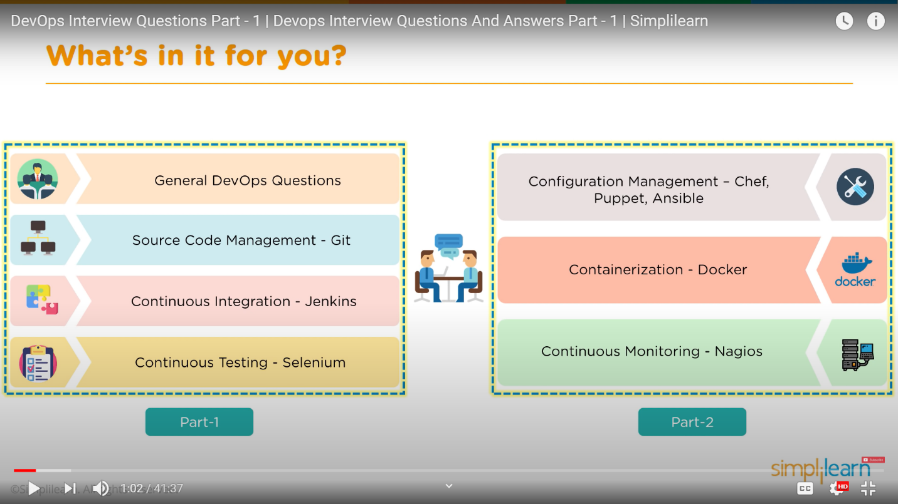
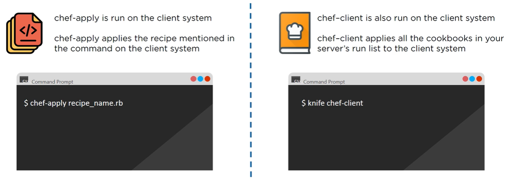

Q: How is DevOps different from Agile?
A: DevOps is a culture, rather than a methodology, and is based on the concept of CONTINUOUS action, not based on fixed length time chunks (Sprints).
Q: How DevOps/Agile relates to Waterfall (Waterfall vs Agile “delivery models”…)?
A: DevOps is the solutions to the limitations of the Agile delivery model (read: how to cash in on the product increment delivered by the development team after each sprint to the operational team).
Q: What are the different phases of DevOps?
A: Technically are: Plan -> Code -> Build -> Test -> Integrate -> Deploy -> Operate -> Monitor. But, effectively, there are two macro-phases: “Plan/Code/Build” and “Deploy”
Q: What are some of the core benefits of DevOps?
A: Technical Benefits: continuous software delivery, early detection and correction of defects. Business benefits: faster implementation of features, more stable and scalable operating environments, improved communication between teams
Q: How would you approach a project that needs to implement DevOps?
A: Stage1: assessment and roadmap for implementation. Stage2: PoC for a subsection of the project. Stage3: implementation of the tools pipeline and start of the continuous delivery of code/features
Q: What is the difference between Continuous Delivery and Continuous Deployment?
A: Continuous Delivery is about putting out code that can be deployed safely to production and behave based on agreed specifications. Continuous Deployment in contrast is all about insuring that we automate the configuration and deployment of the production environment in order to support the customer’s business
Q: What is the role of Configuration Management in DevOps?
A: Maintain integrity and standardize resources in the entire infrastructure across frequent and of mass scale changes
Q: How does Continuous Monitoring help in controlling/maintaining the entire architecture of the system?
A: Continuous Monitoring allows early detection of performance issues, malfunctions and/or treats, which can then be addressed in a timely manner, without disrupting the entire system. Continuous Monitoring also gives you the benefit of self-auditing the system
Q: What is the role of AWS in DevOps?
A: There are 5 areas of focus of AWS in DevOps: 1) flexile services, 2) built to scale, 3) automation, 4) secure and 5) large partner ecosystem. AWS is the leader Cloud provider for what DevOps is concerned.
Q: Name 3 important DevOps KPIs?
A: Mainly: 1) mean time to failure recovery, 2) deployment frequency and 3) percentage of failed deployments (this question is really targeting to demonstrate concrete experience in deploying a DevOps system by the candidate).
Q: Please explain the term “Infrastructure as Code”.
A: It refers to the act of writing code to define, configure, provision and run the environment.
Q: Please explain the difference between centralized and distributed version control systems.
A: The centralized approach requires a central server, that is a single point of failure of the system (and the only repository to contain the whole application/code base). Also the distributed version control system has a central remote repository, but it is used only to store the consolidated version of the code base and each and every user has a full coy of the codebase locally on the development machines for off-line work and redundancy.
Q: What is the command that downloads and repository from GitHub to your local machine?
A: git clone
Q: How to push a file from your local machine to GitHub?
A: First I connect to the repo: git remote add origin https://github.com/blabla/blabla.git and then I push the file: git push origin master
Q: How is bare repository different from the standard way of initializing a Git repository?
A: Standard way with “git init”: you create a working directory and a .git directory with all the git-related revision history. The bare way with “git init --bare”: the directory does not contain any working copy or checked out copy of the source files and also bare repositories store git revision history in the root folder of the repository instead of the .git folder.
Q: Which of the following CLI commands can be used to rename files?
A: git mv
Q: What is the process to revert a commit that has already been pushed and made public?
A: git revert <first 8 digits of the “bad commit” hash>
Q: What is the difference between “git fetch” and “git pull”?
A: “git fetch” downloads only new data from the remote repository and does not integrate any of this new data into the working files. In contrast, “git pull” updates the current HEAD branch with the latest changes from the remote repository and integrates these changes with the current working files, trying to merge the remote and local files.
Q: What is a Git stash?
A: git stash is the command to create a branch that allows me to work on features and files independently from the master branch, without stopping or impacting the work of the other developers.
Q: Explain the concept of branching in Git.
A: Branching is the ability to work on many different features in parallel and independently from the mail line of the code base (master branch), with the end goal to merge these features back into the master branch at a later time.
Q: What is the difference between “git merge” and “git rebase”?
A: “git merge” allows to incorporate new commits from the feature branch into the master branch. “git rebase” add the commits of the feature branch sequentially to the master branch.
Q: How do you find a list of files that has been changed in a particular commit?
A: git diff-tree -r <first 8 digits of the commit hash>
Q: What is a merge conflict in Git and how can it be resolved?
A: Manually edit the conflicted file to select the changes that you want to keep in the final merge.
Q: Explain the master-slave architecture of Jenkins.
A: The Jenkins Master pulls the code from the remote Git repository every time there is a commit, then it distributes the workload to all the Jenkins Slaves and, on request from the Jenkins Master, the Jenkins Slaves carry out builds and tests and produce test reports.
Q: What is a Jenkinsfile?
A: It is a text file that contains the definition of a Jenkins pipeline and is checked into a source control repository. It allows code review and iteration on the pipeline, it permits audit trail for the pipeline and represents the single source of truth for the pipeline which can be viewed and edited.
Q: Which command runs Jenkins from the command line?
A: java -jar Jenkins.war
Q: What are the key concepts of working with a Jenkins pipeline?
A: 1) Pipeline: user-defined model that defines the entire build process. 2) Node: any machine part of the Jenkins environment capable of executing a pipeline. 3) Step: the smallest unit of task to tell Jenkins what to do at a particular point in time. 4) Stage: defines a conceptually distinct set of tasks performed throughout a pipeline (i.e. build stage, test stage, deploy stage).
Q: Which file is used to define dependency in maven?
A: pom.xml
Q: Describe the 2 types of pipeline in Jenkins (with different syntax in the Jenkinsfile).
A: 1) Scripted Pipeline: based on Groovy script as their Domain Specific Language (DLS), where one or more node locks does the core work throughout the entire pipeline. 2) Declarative Pipeline: simpler and more friendly syntax, where a pipeline block defines the work to be done throughout the pipeline.
Q: How do you create a backup of Jenkins and its files?
A: It is as simple as backing up the JENKINS_HOME directory.
Q: How do you copy Jenkins from one server to another?
A: Moving a job to a different Jenkins by simply copying the job directory.
Q: Name 3 security mechanisms Jenkins uses to authenticate users.
A: Jenkins internal database, LDAP or sharing the authentication mechanism of the application server upon which it is deployed.
Q: How to deploy a custom build of a core plugin?
A: That has 4 steps: 1) copy the .hpi file to $JENKINS_HOME/plugins. 2) Remove the plugin’s development directory. 3) Create and empty file called <plugin>.hpi.pinned. 4) Restart Jenkins and use your custom build for a core plugin.
Q: How can you temporarily turn off Jenkins security if the administrative users have locked themselves out of the admin console?
A: When security is enabled, the Config.xml in the JENKINS_HOME folder contains an XML element named useSecurity that is set to true. By changing this setting to false, security will be disabled the next time Jenkins is restarted.
Q: What are the ways in which a build can be scheduled/run in Jenkins?
A: There are 4 ways: 1) by source code management commits. 2) After completions of other builds. 3) Scheduled to tun at specified time. 4) Manual build requests.
Q: Mention the commands that you can use to restart Jenkins manually.
A: There are 2 ways to do that. 1) (Jenkins_URL)/restart: forces a restart without waiting for builds to complete. 2) (Jenkins_URL)/safeRestart: allows all running builds to complete before it restarts.
Q: What are the 4 different components of Selenium?
A: 1) Selenium Integrated Development Environment (IDE), 2) Selenium Remote Control (RC), 3) Selenium WebDriver and 4) Selenium Grid.
Q: What are the different exceptions in Selenium WebDriver?
A: 1) TimeoutException, 2) NoSuchElementExceltion, 3) ElementNotVisibleException and 4) SessionNotFoundException.
Q: Can Selenium test an application on an Android browser?
A: Selenium is capable of testing an application on an Android browser using an Adnroid Driver. Also, you can use Selendroid or Appium framework to test native apps or Web apps in the Android browser.
Q: What are the differnet test types supported by Selenium?
A: 1) Functional tests, 2) Regression tests and 3) Load Testing tests.
Q: How can you get a text of a Web element?
A: Get command is used to retrieve text of a specified Web element. The command does not return any parameter, but a string value.
Q: How can you handle keyboard and mouse actions using Selenium?
A: You can handle keyboard and mouse events by using the Advanced User Interaction API, which contains Actions and Action Classes.
Q: When do we use findElement() and findElements()?
A: findElement() finds the first element in the current Web page that matches to the specified locator value. findElements() finds all the elements in the current Web page that matches to the specified locator value.
Q: What are driver.close() and driver.quit() in WebDriver?
A: These are two different methods used to close the browser session in Selenium WebDriver. driver.close() closes the current browser window on which the focus is set. In this case, there is only one browser open. driver.quit() closes all the browser windows and ends the WebDriver session using driver.dispose method.
Q: How can you submit a firm using Selenium?
A: The following lines of code will let you submit a form using Selenium: WebElement el = driver.findElement(by.id("ElementID")); el.submit();
Q: Why are SSL certificates used in Chef?
A: Secure server-node authentication.
Q: What is "Test Kitchen" in Chef?
A: A command line tool in Chef that spins up a separate instance and tests the cookbook on it before deploying it to the actual nodes.
Q: How does chef-apply differ from chef-client?
A:
Q: What are "resources" in Puppet?
A: 
Q: What is a "Class" in Puppet?
A: 
Q: What is an Ansible "role"?
A: 
Q: What are the differences and similarities between Ansible and Puppet?
A: 
Q: How are Ansible and Puppet architectures different from one another?
A: 
Q: Explain the architecture of Docker.
A: 
Q: What are the advantages of Docker containers over virtual machines?
A: 
Q: How to run multiple containers using a single service?
A: 
Q: What is a Dockerfile?
A: 
Q: What are the differences etween Docker Images and Docker Containers?
A: 
Q: Which language can you use, as alternative to YAML, to build a Dockerfile?
A: JSON.
Q: What are the differences between a Docker Registry and a Docker Repository?
A: 
Q: Which Cloud Platform support Docker?
A: All...
Q: What is the purpose of the "expose" and "publish" commands in Docker?
A: 
Q: Can you describe Nagio architecture?
A: 
Q: What do you mean by Nagios Remore Plugin Executor (NPRE)?
A: 
Q: What are the ports used by Nagios for monitoring purposes?
A: 5666, 5667, 5668
Q: What are active and passive checks in Nagios?
A: 
Q: What is the Nagios configuration file and where is located?
A: 
Q: What is the Nagio Network Analyzer?
A: 
Q: Name the 3 variables that affect recursion and inheritance in Nagios.
A: 
Q: Why is Nagios said to be "Object Oriented"?
A: 
Q: Explain what is "state stalking" in Nagios.
A: